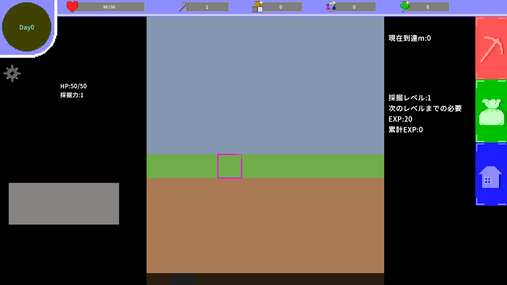
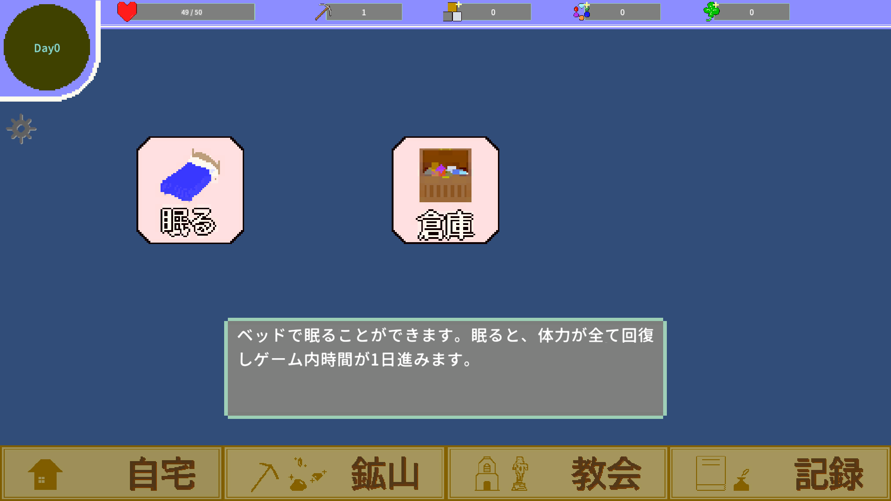

Unity / C#
Dream of Mine


作品概要
無限に生成される鉱山で採掘をしよう！
採掘をすることで得た素材で強化していき、さらに深みを目指して進んでいく、終わりのない採掘ゲーム。
現在も追加のゲームシステム・コンテンツを制作中。
開発情報
制作人数：1人
使用エンジン：Unity
使用言語：C#
制作期間：7ヶ月
実装内容
ステータスシステム
タイルを採掘することで経験値を得てレベルアップすることで体力や採掘力が増加する。
また、採掘した素材を消費することで、9種類の『加護』を強化することができ、さらなる力を得ることができる。
ステータス計算のコードを見るタイル生成
プレイヤーが地下へ進むのに合わせて新しいタイルを生成する仕組みを実装した。
深度に応じてより固く、より新しい種類のタイルが出現する。
地形生成処理のコードを見る採掘システム
このゲームの核となる採掘システム。
採掘処理のコードを見る設計・実装上のポイント
プレイヤー周辺と先の一部の必要なタイルのみを生成し、 一定距離進むごとに不要になった部分を削除する仕様を実装した。
採掘する際に、それが正しい範囲を選択しているかを判定する仕様を実装した。